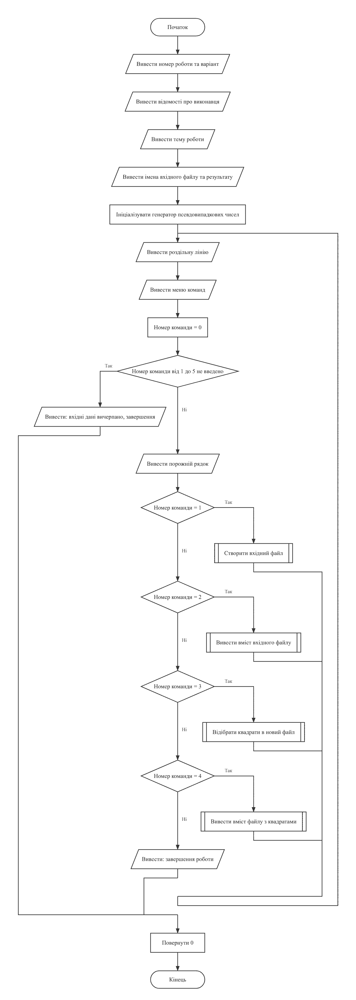
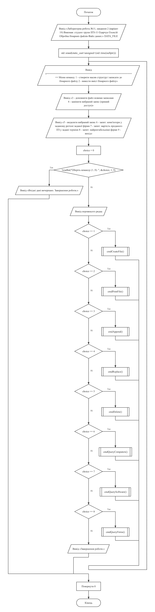
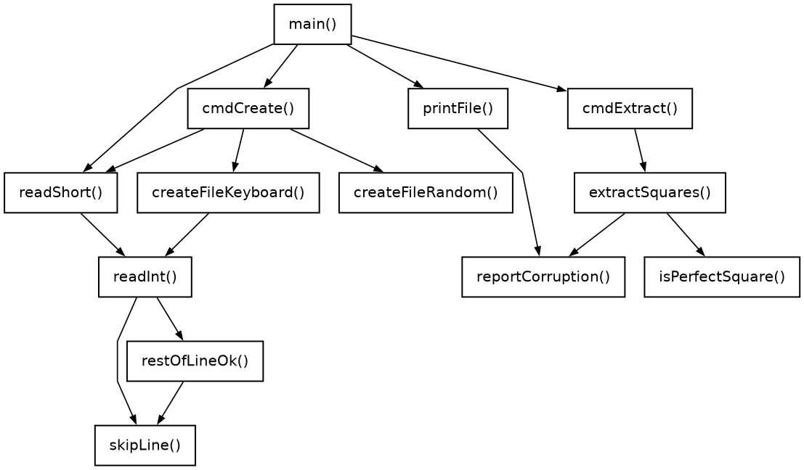
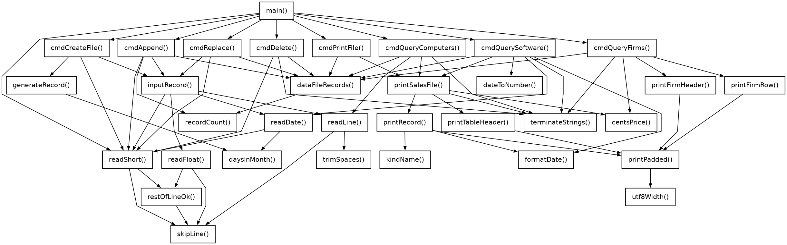

← До переліку лабораторних робіт
Лабораторна робота №11. Текстові та бінарні файли
Варіант 19. Виконав: Одарчук Олексій, КНУ імені Тараса Шевченка, ФІТ, група ІПЗ-11. C17, gcc / C++17, g++
1. Мета роботи
- Вивчити особливості використання текстових і бінарних файлів.
- Навчитися застосовувати текстові та бінарні файли в програмуванні.
- Опанувати послідовний і прямий доступ до компонентів файлу.
2. Умова задачі
Завдання 1 (19.1) - обробка текстових файлів
Створити текстовий файл, записавши в нього цілі числа, значення яких генерує генератор псевдовипадкових чисел у діапазоні, заданому користувачем з клавіатури. Знайти серед цих чисел такі, що є квадратами цілих чисел, і записати їх до нового текстового файлу.
Вимоги до виконання: процедурно-орієнтована технологія (код складається з функцій, основна програма викликає їх за командами меню); меню команд; створення файлу введенням з клавіатури; виведення вмісту файлу на екран; у кожній функції відкривати вхідні файли та закривати вихідні.
Завдання 2 (19.2) - обробка бінарних файлів
Створити масив структур із полями: назва фірми, продукт (комп'ютери і програмне забезпечення), регіон збуту, вартість продажу, термін постачання. Створений масив записати до бінарного файла. Виконати такі операції з бінарним файлом:
- доповнити бінарний файл новими записами;
- замінити вибраний користувачем запис на новий, значення полів якого ввести з клавіатури;
- видалити з бінарного файлу вибраний користувачем запис.
Здійснити пошук у бінарному файлі та вивести у вигляді таблиць: список комп'ютерів, що продаються у заданому регіоні конкретною фірмою; вартість проданого програмного забезпечення у задані терміни; найрентабельніші фірми.
Вимоги до виконання завдання 2: створений масив структур записати до бінарного файлу; надрукувати масив структур у вигляді таблиці, зчитавши дані з бінарного файлу; результати запитів записати до нового бінарного файлу і вивести на екран; розробити функції доповнення, видалення та заміни даних бінарного файлу. Усі дані для запитів беруться з файлу.
Обмеження умови: в процесі обробки рядків забороняється використовувати STL, методи
класу string, ітератори. Дозволено функції заголовних файлів
string.h, ctype.h, stdlib.h.
3. Аналіз задачі та теоретичне обґрунтування
Інструментарій
Методичні вказівки лишають вибір інструментарію за студентом: класи потоків
fstream, ifstream, ofstream або функції
stdio.h над покажчиком на FILE. У роботі застосовано обидва
підходи, по одному на завдання:
| Завдання | Інструментарій | Засоби |
|---|---|---|
| 1 - текстові файли | Мова C, стандартні функції stdio.h |
файл, визначений покажчиком на структуру FILE; fopen,
fclose, fprintf, fscanf
|
| 2 - бінарні файли | Мова C++, класи потоків fstream |
std::ifstream, std::ofstream, std::fstream;
методи read, write, seekp, tellg
|
Завдання 1 написано мовою C (task1.c, gcc -std=c17), завдання 2
- мовою C++ (task2.cpp, g++ -std=c++17).
Завдання 1. Перевірка, чи є число квадратом цілого
Ціла частина кореня обчислюється як (unsigned short)sqrtf((float)n), після
чого перевіряється рівність candidate·candidate == n. Порівнюються цілі
числа, тому похибка дійсної арифметики не може дати хибного "так". Для повного квадрата k²
значення sqrtf відхиляється від k менше ніж на половину кроку
float, тож ціла частина дорівнює k; це перевірено перебором усіх значень
int від 0 до INT_MAX. Для будь-якого іншого числа квадрат цілої
частини кореня з ним не збігається. Від'ємні числа відкидаються одразу; 0 = 0² вважається
квадратом.
Завдання 1. Відкриття та закриття файлів
Кожна функція обробки (createFileRandom, createFileKeyboard,
printFile, extractSquares) сама відкриває потрібні файли й
закриває їх перед виходом, зокрема коли введення перервано. Читання чисел із файлу
ведеться циклом fscanf; якщо цикл зупинився не в кінці файлу (feof
хибна), файл містить не число, і функція reportCorruption
повідомляє, після скількох чисел це трапилось.
Завдання 2. Сталий розмір запису
Текстові поля структури - масиви символів сталої довжини, тож позиція запису обчислюється
множенням номера на sizeof(Sale), без послідовного читання файлу. Поля
структури розміщено за спаданням вирівнювання (float, потім поля типу
short - вид продукту й дата, потім масиви символів): так компілятор не
вставляє між полями байти-заповнювачі, і запис займає 108 байтів. Сам файл при цьому
прив'язаний до платформи: розмір структури разом із вирівнюванням полів і порядок байтів у
числах залежать від компілятора та процесора, тому файл, записаний цією програмою,
коректно прочитає програма, зібрана тим самим компілятором для тієї самої архітектури.
Так само кількість записів визначається без читання даних: файл відкривається з
позиціюванням у кінець (std::ios::ate), tellg() дає розмір у
байтах, який ділиться на розмір структури. Якщо розмір файлу не кратний розміру запису,
recordCount повертає ознаку FILE_CORRUPTED; якщо файл містить
понад 200 записів - ознаку FILE_TOO_LARGE. В обох випадках
dataFileRecords виводить повідомлення, і жодна команда з файлом не працює: ні
перегляд, ні зміни, ні запити. Після кожного читання структури з файлу останній байт
кожного текстового поля примусово встановлюється в нуль (terminateStrings):
для файлу, зміненого поза програмою, це не дає strlen і strcmp
вийти за межі поля. Структури перед заповненням ініціалізуються нулями, тож до файлу не
потрапляє випадковий вміст пам'яті за завершальним нулем текстових полів.
Завдання 2. Заміна, видалення та доповнення
Заміна - прямий доступ. seekp() встановлює позицію
(номер - 1) * sizeof(Sale), і перезаписується одна структура; решта файлу не
змінюється. Файл відкривається в режимі in | out, який не стирає вміст (режим
out
сам по собі усікав би файл).
file.seekp((number - 1) * sizeof(Sale), std::ios::beg); file.write(reinterpret_cast<const char *>(&sale), sizeof(Sale));
Видалення - перезапис. Вирізати байти із середини файлу неможливо, тому всі записи,
крім вибраного, записуються до файлу заново в режимі trunc. Кількість записів
у файлі обмежено 200: на цю межу розраховано масив, до якого зчитуються записи. Більший
файл відхиляється ще до видалення ознакою FILE_TOO_LARGE.
Доповнення виконується режимом std::ios::app: записи дописуються в
кінець, наявний вміст зберігається.
Завдання 2. Запити
Усі дані для запитів беруться з файлу, як вимагають методичні вказівки: кожна функція
запиту відкриває файл, послідовно зчитує записи в циклі
while (file.read(...)) і закриває його.
Завдання 2. Результати запитів
Результат кожного запиту записується до окремого бінарного файлу:
computers.dat і software.dat містять знайдені записи
Sale, firms.dat - записи FirmTotal (фірма,
кількість продажів, сумарна вартість). Файл відкривається в режимі trunc, тож
повторний запит замінює попередній результат; для порожнього періоду в запиті 2 файл теж
створюється заново порожнім.
На екран виводиться вміст щойно записаного файлу результатів.
Вибір типів даних
Програми використовують стільки пам'яті, скільки їм реально треба: для кожної змінної взято найменший тип, у який гарантовано вміщується її діапазон.
Завдання 1.
| Змінні | Тип | Чому |
|---|---|---|
Кількість чисел для створення, лічильник циклу, межі діапазону генерації, пункти
меню, NUMBERS_PER_LINE
|
short |
Кількість 1..32767, межі -10000..10000. Введення читає readShort().
|
Корінь числа root, candidate |
unsigned short |
Для n ≤ INT_MAX корінь не перевищує 46 340: це більше за 32 767 (межа
short), але вміщується в 16 біт без знака.
|
| Числа у файлі, число з клавіатури | int |
Файл може містити будь-яке значення int, зокрема введене з клавіатури;
short обрізав би його.
|
Лічильники прочитаних чисел і знайдених квадратів (printFile,
extractSquares)
|
int |
Файл міг бути доповнений поза програмою і містити понад 32 767 чисел. |
Результат getchar(), scanf() |
int |
Цього типу вимагають стандартні функції: EOF не є символом. |
Корінь обчислює sqrtf у float, а не в double:
точності float досить для всіх значень int.
Завдання 2.
| Змінні | Тип | Чому |
|---|---|---|
Поля дати, кількості й номери записів, індекси, пункти меню, ширини стовпців,
FirmTotal.sales, ознаки FILE_MISSING,
FILE_CORRUPTED, FILE_TOO_LARGE
|
short |
Усі цілі межі не перевищують 9999, записів - не більше 200. Введення читає
readShort().
|
Вид продукту ProductKind |
enum class : short |
Два значення; базовий тип short замість типового
int зменшує запис на 4 байти.
|
Вартість продажу Sale.price, MAX_PRICE,
PRICE_TOLERANCE
|
float |
Вартість обмежено 0..99 999,99 (readFloat()): 7 значущих цифр
float передають її без втрати копійок.
|
Суми total, FirmTotal.total, maxTotal,
результат centsPrice()
|
double |
Сума до 200 × 99 999,99 має більше 7 значущих цифр, у float вона
втратила б копійки.
|
Число дати РРРРММДД (dateToNumber()) |
int |
Досягає 99 991 231, а short вміщує лише до 32 767. |
Результат std::cin.peek() |
int |
EOF не є символом і не вміщується в char. |
Перед додаванням до суми вартість округлюється до копійок функцією
centsPrice(): значення float відрізняється від введеного на
частку копійки, і без округлення ці частки накопичувалися б у сумі сотень записів.
Література: Ковалюк Т.В. Алгоритмізація та програмування. - Львів.: "Магнолія 2006", 2024. - 400 с.; Deitel P., Deitel H. C++ How to Program. Pearson Education, Inc. Hoboken, New Jersey. 2017. - 3015 p.
4. Блок-схема алгоритму






HIPO-діаграма показує ієрархію викликів функцій: зверху головна функція main(), стрілки ведуть до функцій, які вона викликає, нижче - функції, що викликаються з них; петля біля функції означає рекурсивний виклик. Діаграму побудовано за текстом програми.


Схеми побудовано за текстами програм у rombik (rombik.app) відповідно до ДСТУ 19.701-90 (ISO 5807). Структура кожної схеми точно відповідає коду функції, а блоки описують дії словами, як у методичних вказівках, без фрагментів коду.
5. Текст програми
Завдання 1 - task1.c (текстові файли, stdio.h)
/*==============================================================================
task1.c. Лабораторна робота №11. Завдання 1. Варіант 19.
Тема: обробка текстових файлів.
Умова (таблиця 11.2, завдання 19.1): створити текстовий файл, записавши
в нього цілі числа, значення яких генерує генератор псевдовипадкових чисел
у діапазоні, заданому користувачем з клавіатури. Знайти серед цих чисел
такі, що є квадратами цілих чисел, і записати їх до нового текстового файлу.
ВИМОГИ ДО ВИКОНАННЯ ЗАВДАННЯ 1:
- завдання реалізовано за процедурно-орієнтованою технологією: код
складається з функцій (введення даних, виведення результатів, розрахунок),
а основна програма викликає їх залежно від вибору команд меню;
- передбачено меню команд, які виконують окремі операції з обробки файлу;
- програма створює текстовий файл введенням даних з клавіатури
(додатково до генерації, якої вимагає варіант);
- програма виводить вміст файлу на екран;
- у кожній функції вхідні файли відкриваються, а вихідні закриваються.
Інструментарій: стандартні функції stdio.h над файлом, визначеним
покажчиком на структуру FILE (завдання 2 реалізовано класами потоків).
Виконав: Одарчук Олексій, КНУ імені Тараса Шевченка, ФІТ, група ІПЗ-11.
Компілятор: gcc -std=c17
==============================================================================*/
#include <stdio.h>
#include <limits.h>
#include <stdbool.h>
#include <stdlib.h>
#include <time.h>
#include <math.h>
#include <ctype.h>
/* Межі генерації псевдовипадкових чисел. Функція rand() гарантовано повертає
числа лише від 0 до 32767 (RAND_MAX у Visual Studio), тому ширина діапазону
high - low + 1 не повинна перевищувати 32768: інакше вираз
low + rand() % (high - low + 1) охопив би не всі значення діапазону. */
#define MIN_RANDOM -10000
#define MAX_RANDOM 10000
/* Імена файлів: вхідного (з усіма числами) та вихідного (з квадратами). */
const char *const SOURCE_FILE = "numbers.txt"; //ім'я вхідного файлу
const char *const SQUARE_FILE = "squares.txt"; //ім'я файлу з квадратами
/* Кількість чисел в одному рядку під час виведення файлу. */
const short NUMBERS_PER_LINE = 10; //кількість чисел у рядку
//========= skipLine: відкинути залишок рядка введення разом із символом '\n' ==========
/*
skipLine - відкинути залишок рядка введення разом із символом '\n'.
*/
void skipLine(void)
{
int c = getchar(); //прочитати символ
while (c != '\n' && c != EOF) //повторювати до кінця рядка
{
c = getchar(); //прочитати наступний символ
}
}
//======= restOfLineOk: перевірити залишок рядка після успішно прочитаного числа =======
/*
restOfLineOk - перевірити залишок рядка після успішно прочитаного числа.
Припустимі лише пропуски до кінця рядка або до наступного числа (тоді
його прочитає наступний виклик readInt або readShort); будь-який інший
символ - помилка, і решта рядка відкидається.
Повертає : true - залишок рядка припустимий; false - у рядку зайві символи.
*/
bool restOfLineOk(void)
{
int c = getchar(); //прочитати символ
while (c == ' ' || c == '\t' || c == '\r') //пропустити пропуски
{
c = getchar(); //прочитати наступний символ
}
if (c == '\n' || c == EOF) //якщо рядок закінчився
{
return true; //повернути ознаку успіху
}
if (isdigit(c) || c == '-' || c == '+') //якщо почалося наступне число
{
ungetc(c, stdin); //повернути символ у потік
return true; //повернути ознаку успіху
}
skipLine(); //відкинути залишок рядка
return false; //повернути ознаку помилки
}
//====== readInt: прочитати ціле число із заданого діапазону з контролем введення ======
/*
readInt - прочитати ціле число із заданого діапазону з контролем введення.
Параметри: prompt [вхідний], value [вихідний], low, high [вхідні].
Повертає : true - число прочитано; false - вхідні дані вичерпано.
*/
bool readInt(const char *prompt, int *value, int low, int high)
{
for (;;) //повторювати до коректного введення
{
printf("%s", prompt); //вивести запрошення
const int scanned = scanf("%d", value); //увести число
if (scanned == EOF) //якщо дані вичерпано
{
return false; //повернути ознаку кінця даних
}
if (scanned == 0) //якщо число не прочитано
{
skipLine(); //відкинути хибний рядок
}
else if (restOfLineOk() && *value >= low && *value <= high) //число коректне
{
return true; //повернути ознаку успіху
}
//вивести повідомлення про помилку
printf("Помилка: потрібне ціле число від %d до %d.\n", low, high);
}
}
//===== readShort: прочитати коротке ціле число із заданого діапазону з контролем =====
/*
readShort - прочитати коротке ціле число (short) із заданого діапазону
з контролем введення.
Для кількості чисел, меж діапазону та пунктів меню, межі яких уміщуються
в 16 біт. Число читається через readInt у змінну int, а не через
scanf("%hd"): за "%hd" надто велике число мовчки обрізається до 16 біт
(98303 стало б 32767) і пройшло б перевірку меж. Після перевірки меж
значення гарантовано вміщується в short.
Параметри: prompt [вхідний], value [вихідний], low, high [вхідні].
Повертає : true - число прочитано; false - вхідні дані вичерпано.
Локальні змінні:
number - прочитане число до перевірки меж.
*/
bool readShort(const char *prompt, short *value, short low, short high)
{
int number = 0; //прочитане число до перевірки меж
if (!readInt(prompt, &number, low, high)) //увести число
{
return false; //повернути ознаку кінця даних
}
*value = (short)number; //записати число в межах short
return true; //повернути ознаку успіху
}
//================= isPerfectSquare: чи є число квадратом цілого числа =================
/*
isPerfectSquare - чи є число квадратом цілого числа.
Від'ємні числа квадратами не є за означенням. Для невід'ємних обчислюється
цілий корінь як ціла частина sqrt(n), після чого перевіряється рівність
його квадрата вихідному числу. Порівнюються цілі числа, тому хибно
"квадратом" число не визнається за жодної точності дійсних чисел.
Корінь рахується у float (sqrtf), а не в double. У float лише 24 біти
мантиси, тож (float)n для n > 2^24 округлюється, але для квадрата k*k
це зсуває корінь менше ніж на половину кроку float біля k (не більше
0.0007 при кроці 0.004 біля 46340), тому sqrtf повертає рівно k.
Це перевірено перебором усіх n від 0 до INT_MAX: результат збігається
з точним, тож double тут не потрібен.
Тип кореня unsigned short: для n <= INT_MAX корінь не перевищує 46340
(46341^2 > INT_MAX), тобто вміщується в 16 біт без знака, а у short
(до 32767) - ні. Добуток candidate * candidate обчислюється в int
і не перевищує 46340^2 = 2147395600 <= INT_MAX.
Параметри:
n [вхідний] - число, що перевіряється;
root [вихідний] - адреса змінної для кореня; заповнюється, якщо число
є квадратом.
Повертає : true - число є квадратом цілого числа.
Локальні змінні:
candidate - ціла частина кореня.
*/
bool isPerfectSquare(int n, unsigned short *root)
{
if (n < 0) //якщо число від'ємне
{
return false; //повернути ознаку неквадрата
}
//ціла частина кореня: для n >= 0 відкидання дробової частини дорівнює floor
const unsigned short candidate = (unsigned short)sqrtf((float)n); //корінь
if (candidate * candidate != n) //якщо квадрат кореня не дорівнює числу
{
return false; //повернути ознаку неквадрата
}
*root = candidate; //записати корінь
return true; //повернути ознаку квадрата
}
//============= createFileRandom: створити текстовий файл, заповнивши його =============
/*
createFileRandom - створити текстовий файл, заповнивши його
псевдовипадковими цілими числами із заданого діапазону.
Файл відкривається на запис у цій самій функції та закривається до виходу
з неї - відповідно до вимоги умови.
Параметри:
fileName [вхідний] - ім'я файлу;
count [вхідний] - кількість чисел (1..32767);
low, high [вхідні] - межі діапазону значень (MIN_RANDOM..MAX_RANDOM).
Повертає : true - файл створено; false - файл не вдалося відкрити.
Локальні змінні:
file - покажчик на структуру FILE;
i - номер чергового числа;
value - чергове згенероване число.
*/
bool createFileRandom(const char *fileName, short count, short low, short high)
{
FILE *const file = fopen(fileName, "w"); //відкрити файл на запис
if (file == NULL) //якщо файл не відкрито
{
//повідомити про помилку
printf("Помилка: не вдалося створити файл \"%s\".\n", fileName);
return false; //повернути ознаку помилки
}
for (short i = 0; i < count; ++i) //перебрати числа
{
const int value = low + rand() % (high - low + 1); //число від low до high
fprintf(file, "%d\n", value); //записати число у файл
}
fclose(file); //закрити файл
printf("Файл \"%s\" створено. Кількість чисел: %hd, діапазон [%hd; %hd].\n",
fileName, count, low, high); //повідомити про створення файлу
return true; //повернути ознаку успіху
}
//======= createFileKeyboard: створити текстовий файл, увівши числа з клавіатури =======
/*
createFileKeyboard - створити текстовий файл, увівши числа з клавіатури.
Параметри:
fileName [вхідний] - ім'я файлу;
count [вхідний] - кількість чисел (1..32767).
Повертає : true - файл створено; false - помилка або переривання введення
(тоді у файлі лишаються вже введені числа, про що повідомляється).
Локальні змінні:
file - покажчик на структуру FILE;
i - номер чергового числа;
prompt - запрошення з номером чергового числа;
value - чергове введене число (увесь діапазон int).
*/
bool createFileKeyboard(const char *fileName, short count)
{
FILE *const file = fopen(fileName, "w"); //відкрити файл на запис
if (file == NULL) //якщо файл не відкрито
{
//повідомити про помилку
printf("Помилка: не вдалося створити файл \"%s\".\n", fileName);
return false; //повернути ознаку помилки
}
printf("Уведіть цілі числа (усього %hd):\n", count); //вивести запрошення
for (short i = 0; i < count; ++i) //перебрати числа
{
//" число 32767: " - 20 байтів UTF-8 (літера кирилиці - 2 байти) і '\0'
char prompt[21]; //запрошення з номером числа
snprintf(prompt, sizeof prompt, " число %d: ", i + 1); //сформувати запрошення
int value = 0; //чергове введене число
if (!readInt(prompt, &value, INT_MIN, INT_MAX)) //увести число
{
fclose(file); //закрити файл навіть при перериванні
printf("\nВведення перервано: до файлу \"%s\" записано чисел: %hd з %hd.\n",
fileName, i, count); //повідомити про переривання
return false; //повернути ознаку помилки
}
fprintf(file, "%d\n", value); //записати число у файл
}
fclose(file); //закрити файл
//повідомити про створення файлу
printf("Файл \"%s\" створено. Кількість чисел: %hd.\n", fileName, count);
return true; //повернути ознаку успіху
}
//======= reportCorruption: повідомити, якщо читання чисел зупинилось не в кінці =======
/*
reportCorruption - повідомити, якщо читання чисел зупинилось не в кінці
файлу, тобто у файлі трапилось не число.
Викликається після циклу fscanf(): цикл закінчується або кінцем файлу
(тоді feof() істинна), або символом, який не є частиною числа.
Параметри:
file [вхідний] - відкритий файл після циклу читання;
fileName [вхідний] - ім'я файлу для повідомлення;
count [вхідний] - кількість чисел, прочитаних до зупинки.
*/
void reportCorruption(FILE *file, const char *fileName, int count)
{
if (!feof(file)) //якщо читання зупинилось не в кінці
{
printf("Увага: файл \"%s\" пошкоджено - після %d чисел трапилось "
"не число, решту вмісту пропущено.\n",
fileName, count); //повідомити про пошкодження файлу
}
}
//================= printFile: вивести вміст текстового файлу на екран =================
/*
printFile - вивести вміст текстового файлу на екран.
Числа виводяться по десять у рядку, щоб великий файл лишався читабельним.
Числа у файлі - int (програма записує лише значення int). Лічильник - int,
а не short: файл міг бути доповнений поза програмою і містити більше
32767 чисел.
Параметри: fileName [вхідний] - ім'я файлу.
Повертає : кількість прочитаних чисел або -1, якщо файл не існує.
Локальні змінні:
file - покажчик на структуру FILE;
value - прочитане число;
count - лічильник прочитаних чисел.
*/
int printFile(const char *fileName)
{
FILE *const file = fopen(fileName, "r"); //відкрити файл на читання
if (file == NULL) //якщо файл не відкрито
{
//повідомити про відсутність файлу
printf("Файл \"%s\" не існує. Спочатку створіть його.\n", fileName);
return -1; //повернути ознаку помилки
}
printf("Вміст файлу \"%s\":\n ", fileName); //вивести заголовок вмісту
int value = 0; //прочитане число
int count = 0; //лічильник прочитаних чисел
while (fscanf(file, "%d", &value) == 1) //читати числа до кінця файлу
{
printf(" %8d", value); //вивести число
++count; //збільшити лічильник чисел
if (count % NUMBERS_PER_LINE == 0) //якщо рядок заповнено
{
printf("\n "); //перейти на новий рядок
}
}
if (count % NUMBERS_PER_LINE != 0) //якщо останній рядок неповний
{
printf("\n"); //завершити рядок
}
reportCorruption(file, fileName, count); //перевірити цілісність файлу
fclose(file); //закрити файл
printf("Усього чисел: %d\n", count); //вивести кількість чисел
return count; //повернути кількість чисел
}
//===== extractSquares: знайти у вхідному файлі числа, що є квадратами цілих чисел =====
/*
extractSquares - знайти у вхідному файлі числа, що є квадратами цілих чисел,
і записати їх до нового файлу.
Обидва файли відкриваються та закриваються в межах цієї функції: вхідний -
на читання, вихідний - на запис. Лічильники - int, а не short: файл міг
бути доповнений поза програмою і містити більше 32767 чисел.
Параметри:
sourceName [вхідний] - ім'я вхідного файлу;
targetName [вхідний] - ім'я файлу для результату;
total [вихідний] - адреса лічильника переглянутих чисел.
Повертає : кількість знайдених квадратів або -1 у разі помилки.
Локальні змінні:
source, target - покажчики на структури FILE;
value - чергове прочитане число;
root - цілий корінь знайденого квадрата;
found - лічильник знайдених квадратів.
*/
int extractSquares(const char *sourceName, const char *targetName, int *total)
{
FILE *const source = fopen(sourceName, "r"); //відкрити вхідний файл
if (source == NULL) //якщо файл не відкрито
{
//повідомити про відсутність файлу
printf("Файл \"%s\" не існує. Спочатку створіть його.\n", sourceName);
return -1; //повернути ознаку помилки
}
FILE *const target = fopen(targetName, "w"); //відкрити файл результату
if (target == NULL) //якщо файл не відкрито
{
//повідомити про помилку
printf("Помилка: не вдалося створити файл \"%s\".\n", targetName);
fclose(source); //закрити вхідний файл
return -1; //повернути ознаку помилки
}
int value = 0; //прочитане число
int found = 0; //лічильник знайдених квадратів
*total = 0; //обнулити лічильник чисел
printf("Знайдені квадрати цілих чисел:\n"); //вивести заголовок результату
while (fscanf(source, "%d", &value) == 1) //читати числа до кінця файлу
{
++(*total); //збільшити лічильник чисел
unsigned short root = 0; //цілий корінь числа (до 46340)
if (isPerfectSquare(value, &root)) //якщо число є квадратом
{
fprintf(target, "%d\n", value); //записати квадрат у файл
printf(" %d = %hu^2\n", value, root); //вивести квадрат і корінь
++found; //збільшити лічильник квадратів
}
}
reportCorruption(source, sourceName, *total); //перевірити цілісність файлу
fclose(source); //закрити вхідний файл
fclose(target); //закрити файл результату
if (found == 0) //якщо квадратів не знайдено
{
printf(" таких чисел у файлі немає\n"); //повідомити про відсутність квадратів
}
return found; //повернути кількість квадратів
}
//============================== cmdCreate: команда меню ===============================
/*
cmdCreate - команда меню: створити вхідний текстовий файл.
Кількість чисел обмежено 32767 (SHRT_MAX): її вводять вручну, а файл
такого розміру вже непридатний для перегляду на екрані.
Локальні змінні:
count - кількість чисел;
choice - обраний спосіб створення;
low, high - межі діапазону генерації.
*/
void cmdCreate(void)
{
short count = 0; //кількість чисел (1..32767)
//увести кількість чисел
if (!readShort("Уведіть кількість чисел (1..32767): ", &count, 1, SHRT_MAX))
{
return; //завершити команду
}
//вивести способи створення
printf("Спосіб створення файлу:\n"
" 1 - введення чисел з клавіатури\n"
" 2 - генерація псевдовипадкових чисел у заданому діапазоні\n");
short choice = 0; //обраний спосіб створення
if (!readShort("Оберіть спосіб (1..2): ", &choice, 1, 2)) //увести спосіб створення
{
return; //завершити команду
}
if (choice == 1) //якщо обрано клавіатуру
{
createFileKeyboard(SOURCE_FILE, count); //створити файл з клавіатури
return; //завершити команду
}
short low = 0; //нижня межа діапазону (-10000..10000)
short high = 0; //верхня межа діапазону (low..10000)
//увести межі діапазону
if (!readShort("Уведіть нижню межу діапазону (-10000..10000): ", &low, MIN_RANDOM,
MAX_RANDOM) ||
!readShort("Уведіть верхню межу діапазону (не більше 10000): ", &high, low,
MAX_RANDOM))
{
return; //завершити команду
}
createFileRandom(SOURCE_FILE, count, low, high); //створити файл випадкових чисел
}
//============================== cmdExtract: команда меню ==============================
/*
cmdExtract - команда меню: відібрати квадрати цілих чисел у новий файл.
Локальні змінні:
total - кількість переглянутих чисел;
found - кількість знайдених квадратів.
*/
void cmdExtract(void)
{
int total = 0; //кількість переглянутих чисел
//відібрати квадрати у файл
const int found = extractSquares(SOURCE_FILE, SQUARE_FILE, &total);
if (found < 0) //якщо сталася помилка
{
return; //завершити команду
}
printf("\nПереглянуто чисел: %d\n", total); //вивести кількість переглянутих
printf("Знайдено квадратів: %d\n", found); //вивести кількість квадратів
//вивести ім'я файлу результату
printf("Результат записано до файлу \"%s\".\n", SQUARE_FILE);
}
//================================ головна функція main ================================
/*
Головна функція. Відображає меню та викликає відповідні функції обробки файлів.
Локальні змінні:
choice - номер обраного пункту меню.
*/
int main(void)
{
printf("Лабораторна робота №11, завдання 1 (варіант 19)\n"); //вивести назву роботи
printf("Виконав: студент групи ІПЗ-11 Одарчук Олексій\n"); //вивести дані виконавця
printf("Обробка текстових файлів\n"); //вивести призначення програми
//вивести імена файлів
printf("Вхідний файл: %s, файл результату: %s\n", SOURCE_FILE, SQUARE_FILE);
/* Генератор псевдовипадкових чисел ініціалізується один раз на весь
сеанс роботи програми. */
srand((unsigned)time(NULL)); //ініціалізувати генератор чисел
for (;;) //повторювати виконання команд
{
//вивести роздільник
printf("\n============================================================\n");
printf("Меню команд:\n"); //вивести заголовок меню
printf(" 1 - створити текстовий файл з цілими числами\n"); //вивести пункт 1
printf(" 2 - вивести вміст вхідного файлу\n"); //вивести пункт 2
printf(" 3 - відібрати квадрати цілих чисел у новий файл\n"); //вивести пункт 3
printf(" 4 - вивести вміст файлу з квадратами\n"); //вивести пункт 4
printf(" 5 - вихід\n"); //вивести пункт 5
short choice = 0; //обраний пункт меню
if (!readShort("Оберіть команду (1..5): ", &choice, 1,
5)) //увести номер команди
{
//повідомити про кінець даних
printf("\nВхідні дані вичерпано. Завершення роботи.\n");
break; //перервати цикл меню
}
printf("\n"); //вивести порожній рядок
if (choice == 1) //якщо обрано команду 1
{
cmdCreate(); //створити вхідний файл
}
else if (choice == 2) //якщо обрано команду 2
{
printFile(SOURCE_FILE); //вивести вхідний файл
}
else if (choice == 3) //якщо обрано команду 3
{
cmdExtract(); //відібрати квадрати
}
else if (choice == 4) //якщо обрано команду 4
{
printFile(SQUARE_FILE); //вивести файл з квадратами
}
else //інакше обрано вихід
{
printf("Завершення роботи.\n"); //повідомити про завершення
break; //перервати цикл меню
}
}
return 0; //повернути код успіху
}
Завдання 2 - task2.cpp (бінарні файли, fstream)
/*==============================================================================
task2.cpp. Лабораторна робота №11. Завдання 2. Варіант 19.
Тема: обробка бінарних файлів.
Умова (таблиця 11.2, завдання 19.2): створити масив структур. Кожна
структура складається з таких елементів: назва фірми, продукт, що
продається - комп'ютери і програмне забезпечення, регіон збуту, вартість
продажу, термін постачання. Створений масив структур записати до бінарного
файла. Виконати такі операції з бінарним файлом:
- доповнити бінарний файл новими записами;
- замінити вибраний користувачем запис у бінарному файлі на новий,
значення полів якого ввести з клавіатури;
- видалити з бінарного файлу вибраний користувачем запис.
Здійснити пошук у бінарному файлі та вивести у вигляді таблиць:
- список комп'ютерів, що продаються у заданому регіоні конкретною фірмою;
- вартість проданого програмного забезпечення у задані терміни;
- найрентабельніші фірми (з найбільшою вартістю продажів).
Результати запитів записати до нового бінарного файлу і вивести на екран.
Усі дані для запитів беруться з файлу: кожна функція запиту відкриває файл
даних, послідовно зчитує записи, записує знайдене до окремого файлу
результатів і закриває обидва файли; на екран виводиться вміст файлу
результатів.
Інструментарій: класи потоків fstream, ifstream, ofstream (завдання 1
реалізовано функціями stdio.h).
Заміна запису виконується прямим доступом: позиція запису обчислюється як
номер, помножений на розмір структури, і перезаписується лише цей запис.
Виконав: Одарчук Олексій, КНУ імені Тараса Шевченка, ФІТ, група ІПЗ-11.
Компілятор: g++ -std=c++17
==============================================================================*/
#include <iostream>
#include <fstream>
#include <iomanip>
#include <limits>
#include <cctype>
#include <cstdio>
#include <cstring>
#include <cstdlib>
#include <ctime>
#include <cmath>
/* Обмеження на розміри даних та імена бінарних файлів. Усі цілі межі
не перевищують 32 767, тож кількості, номери, індекси й поля дати - short. */
const short MAX_RECORDS = 200; //найбільша кількість записів у файлі даних
const short MAX_NAME = 32; //розмір текстового поля разом із завершальним нулем
const short MAX_YEAR = 9999; //найбільший рік: число РРРРММДД вміщується в int
const char *const DATA_FILE = "sales.dat"; //ім'я файлу даних
const char *const COMPUTERS_FILE = "computers.dat"; //результат запиту 1
const char *const SOFTWARE_FILE = "software.dat"; //результат запиту 2
const char *const FIRMS_FILE = "firms.dat"; //результат запиту 3
/* float зберігає 7 значущих цифр: вартість до 99 999,99 передається
без втрати копійок (похибка округлення не перевищує 0,004). */
const float MAX_PRICE = 99999.99f; //найбільша вартість одного продажу
/* Половина копійки: суми продажів накопичуються в double, тож дві математично
рівні суми можуть відрізнятися похибкою округлення. */
const float PRICE_TOLERANCE = 0.005f; //допустима похибка порівняння сум
/* Набори назв для генерації псевдовипадкових записів. */
//назви фірм
const char *const FIRMS[] = {"Everest", "Kvazar", "Sokil", "Dnipro-IT", "Karpaty"};
const char *const REGIONS[] = {"Київський", "Львівський", "Одеський", "Харківський",
"Дніпровський"}; //назви регіонів збуту
//назви моделей комп'ютерів
const char *const COMPUTERS[] = {"Optima 5", "Nova Pro", "Titan X", "Bureau 300"};
//назви програмних продуктів
const char *const SOFTWARE[] = {"OblikPro", "SklavSoft", "DocFlow", "AntiVirus U"};
const short FIRMS_COUNT = sizeof FIRMS / sizeof FIRMS[0]; //кількість назв фірм
//кількість назв регіонів
const short REGIONS_COUNT = sizeof REGIONS / sizeof REGIONS[0];
//кількість назв комп'ютерів
const short COMPUTERS_COUNT = sizeof COMPUTERS / sizeof COMPUTERS[0];
//кількість назв програм
const short SOFTWARE_COUNT = sizeof SOFTWARE / sizeof SOFTWARE[0];
/* Ширини стовпців таблиці записів (у символах). */
const short COL_NUMBER = 4; //ширина стовпця номера
const short COL_FIRM = 14; //ширина стовпця фірми
const short COL_PRODUCT = 16; //ширина стовпця продукту
const short COL_KIND = 12; //ширина стовпця виду
const short COL_REGION = 16; //ширина стовпця регіону
const short COL_PRICE = 17; //ширина стовпця вартості
const short COL_DATE = 18; //ширина стовпця терміну
//загальна ширина таблиці
const short TABLE_WIDTH =
COL_NUMBER + COL_FIRM + COL_PRODUCT + COL_KIND + COL_REGION + COL_PRICE + COL_DATE;
/* Ширини стовпців таблиці сум продажів по фірмах. */
const short COL_FIRM_NAME = 16; //ширина стовпця назви фірми
const short COL_FIRM_SALES = 12; //ширина стовпця кількості продажів
const short COL_FIRM_TOTAL = 20; //ширина стовпця сумарної вартості
//загальна ширина таблиці фірм
const short FIRM_TABLE_WIDTH = COL_FIRM_NAME + COL_FIRM_SALES + COL_FIRM_TOTAL;
/* Вид продукту: умова прямо називає два види. Базовий тип short замість
типового int зменшує запис на 4 байти. */
enum class ProductKind : short
{
Computer,
Software
};
/* Термін постачання. */
struct Date
{
short day; //день (1..31)
short month; //місяць (1..12)
short year; //рік (1..MAX_YEAR)
};
//=============================== Sale: запис про продаж ===============================
/*
Sale - запис про продаж. Структура має сталий розмір (масиви символів
замість рядків змінної довжини), що є обов'язковою умовою для запису
в бінарний файл із прямим доступом: лише за сталого розміру запису
його позицію можна обчислити множенням номера на sizeof(Sale).
Поля розміщено за спаданням вирівнювання (float, потім short, потім масиви
символів), щоб компілятор не вставляв між ними байти-заповнювачі:
розмір структури дорівнює сумі розмірів полів, 108 байтів.
*/
struct Sale
{
float price; //вартість продажу (0..MAX_PRICE): 7 цифр float досить
ProductKind kind; //вид продукту
Date delivery; //термін постачання
char firm[MAX_NAME]; //назва фірми
char product[MAX_NAME]; //назва продукту
char region[MAX_NAME]; //регіон збуту
};
/* Сумарні продажі однієї фірми - запис файлу результатів запиту 3.
Розмір структури 48 байтів: 8 + 2 + 32 і 6 байтів вирівнювання до кратного 8. */
struct FirmTotal
{
double total; //сумарна вартість: до 200 * 99 999,99, для float забагато цифр
short sales; //кількість продажів (0..MAX_RECORDS)
char firm[MAX_NAME]; //назва фірми
};
/*==============================================================================
Допоміжні функції
==============================================================================*/
//================= utf8Width: ширина рядка в символах, а не в байтах ==================
/*
utf8Width - ширина рядка в символах, а не в байтах (кирилиця в UTF-8
займає два байти на літеру).
Рядки програми (назви, заголовки, запрошення) коротші за 32 767 байтів.
Параметри: s [вхідний] - рядок. Повертає: кількість символів.
*/
short utf8Width(const char *s)
{
short width = 0; //кількість символів у рядку
for (const unsigned char *p = reinterpret_cast<const unsigned char *>(s);
*p != '\0'; ++p) //перебрати байти рядка
{
/* Продовжувальний байт UTF-8 має вигляд 10xxxxxx: маска 0xC0 лишає
два старші біти, і якщо вони не дорівнюють 10, це початок символу. */
if ((*p & 0xC0) != 0x80) //якщо байт починає символ
{
++width; //урахувати ще один символ
}
}
return width; //повернути ширину рядка
}
//======= printPadded: вивести рядок, доповнивши пропусками до ширини в символах =======
/*
printPadded - вивести рядок, доповнивши пропусками до ширини в символах.
Параметри: s [вхідний], width [вхідний].
*/
void printPadded(const char *s, short width)
{
std::cout << s; //вивести рядок
for (short i = utf8Width(s); i < width; ++i) //доповнити до заданої ширини
{
std::cout << ' '; //вивести пропуск
}
}
//=========================== kindName: назва виду продукту ============================
/*
kindName - назва виду продукту.
Параметри: kind [вхідний]. Повертає: рядок-константу.
*/
const char *kindName(ProductKind kind)
{
return kind == ProductKind::Computer ? "комп'ютери" : "ПЗ"; //повернути назву виду
}
//========== dateToNumber: звести дату до числа виду РРРРММДД для порівняння ===========
/*
dateToNumber - звести дату до числа виду РРРРММДД для порівняння.
Рік не перевищує MAX_YEAR, тому число не більше 99 991 231 і вміщується в int.
Параметри: d [вхідний] - покажчик на дату. Повертає: число РРРРММДД.
*/
int dateToNumber(const Date *d)
{
return d->year * 10000 + d->month * 100 + d->day; //повернути число РРРРММДД
}
//============== formatDate: записати дату до рядка у вигляді ДД.ММ.РРРР ===============
/*
formatDate - записати дату до рядка у вигляді ДД.ММ.РРРР.
Параметри: d [вхідний] - покажчик на дату; buffer [вихідний], size [вхідний].
*/
void formatDate(const Date *d, char *buffer, short size)
{
//записати дату до рядка
std::snprintf(buffer, size, "%02d.%02d.%d", d->day, d->month, d->year);
}
//======== daysInMonth: кількість днів у місяці з урахуванням високосного року =========
/*
daysInMonth - кількість днів у місяці з урахуванням високосного року.
Параметри: month, year [вхідні]. Повертає: кількість днів.
*/
short daysInMonth(short month, short year)
{
if (month == 2) //якщо лютий
{
//визначити, чи рік високосний
const bool isLeap = (year % 4 == 0 && year % 100 != 0) || year % 400 == 0;
return isLeap ? 29 : 28; //повернути кількість днів лютого
}
if (month == 4 || month == 6 || month == 9 || month == 11) //якщо місяць має 30 днів
{
return 30; //повернути 30 днів
}
return 31; //повернути 31 день
}
//========= skipLine: відкинути залишок рядка введення разом із символом '\n' ==========
/*
skipLine - відкинути залишок рядка введення разом із символом '\n'.
*/
void skipLine()
{
std::cin.clear(); //скинути ознаки помилки потоку
//відкинути символи до кінця рядка
std::cin.ignore(std::numeric_limits<std::streamsize>::max(), '\n');
}
//======= restOfLineOk: перевірити залишок рядка після успішно прочитаного числа =======
/*
restOfLineOk - перевірити залишок рядка після успішно прочитаного числа.
Припустимі лише пропуски до кінця рядка або до наступного числа (тоді
його прочитає наступний виклик функції читання); будь-який інший символ -
помилка, і решта рядка відкидається.
Повертає : true - залишок рядка припустимий; false - у рядку зайві символи.
*/
bool restOfLineOk()
{
int c = std::cin.peek(); //наступний символ або EOF: int, бо EOF не є символом
while (c == ' ' || c == '\t' || c == '\r') //пропустити пробільні символи
{
std::cin.get(); //відкинути пробільний символ
c = std::cin.peek(); //переглянути наступний символ
}
if (c == '\n') //якщо досягнуто кінця рядка
{
std::cin.get(); //відкинути символ кінця рядка
return true; //повернути ознаку припустимого залишку
}
//якщо далі кінець даних або число
if (c == std::char_traits<char>::eof() || std::isdigit(c) || c == '-' || c == '+')
{
return true; //повернути ознаку припустимого залишку
}
skipLine(); //відкинути решту рядка
return false; //повернути ознаку зайвих символів
}
//=============== readShort: прочитати ціле число із заданого діапазону ================
/*
readShort - прочитати ціле число типу short із заданого діапазону.
Усі цілі, що вводяться (пункт меню, кількість і номер запису, вид продукту,
складові дати), не перевищують 9999. Число поза межами short потік
не приймає, і запит повторюється.
Параметри: prompt [вхідний], value [вихідний], low, high [вхідні].
Повертає : true - прочитано; false - вхідні дані вичерпано.
*/
bool readShort(const char *prompt, short *value, short low, short high)
{
for (;;) //повторювати до коректного введення
{
std::cout << prompt; //вивести запрошення
std::cin >> *value; //увести ціле число
if (std::cin.fail() && std::cin.eof()) //якщо вхідні дані вичерпано
{
return false; //повернути ознаку кінця даних
}
if (std::cin.fail()) //якщо введено не число
{
skipLine(); //відкинути помилковий рядок
}
//якщо число в межах діапазону
else if (restOfLineOk() && *value >= low && *value <= high)
{
return true; //повернути ознаку успішного введення
}
std::cout << "Помилка: потрібне ціле число від " << low << " до " << high
<< ".\n"; //вивести повідомлення про помилку
}
}
//============== readFloat: прочитати дійсне число із заданого діапазону ===============
/*
readFloat - прочитати дійсне число із заданого діапазону.
Параметри: prompt [вхідний], value [вихідний], low, high [вхідні].
Повертає : true - прочитано; false - вхідні дані вичерпано.
*/
bool readFloat(const char *prompt, float *value, float low, float high)
{
for (;;) //повторювати до коректного введення
{
std::cout << prompt; //вивести запрошення
std::cin >> *value; //увести дійсне число
if (std::cin.fail() && std::cin.eof()) //якщо вхідні дані вичерпано
{
return false; //повернути ознаку кінця даних
}
if (std::cin.fail()) //якщо введено не число
{
skipLine(); //відкинути помилковий рядок
}
//якщо число коректне
else if (restOfLineOk() && *value >= low && *value <= high)
{
return true; //повернути ознаку успішного введення
}
std::cout << "Помилка: потрібне дійсне число від " << std::fixed
<< std::setprecision(2) << low << " до " << high
<< ".\n"; //вивести повідомлення про помилку
}
}
//====== trimSpaces: прибрати пропуски на початку й у кінці рядка, щоб випадковий ======
/*
trimSpaces - прибрати пропуски на початку й у кінці рядка, щоб випадковий
пропуск не заважав порівнянню назв під час пошуку.
Параметри: s [вхідний/вихідний] - рядок.
*/
void trimSpaces(char *s)
{
short length = std::strlen(s); //довжина рядка без кінцевих пропусків (< MAX_NAME)
//поки в кінці рядка пропуск
while (length > 0 && std::isspace(static_cast<unsigned char>(s[length - 1])))
{
--length; //відкинути кінцевий пропуск
}
s[length] = '\0'; //завершити рядок нулем
short start = 0; //індекс першого непробільного символу
//пропустити початкові пропуски
while (std::isspace(static_cast<unsigned char>(s[start])))
{
++start; //перейти до наступного символу
}
std::memmove(s, s + start, length - start + 1); //зсунути рядок на початок буфера
}
//============ readLine: прочитати непорожній текстовий рядок з клавіатури =============
/*
readLine - прочитати непорожній текстовий рядок з клавіатури.
Рядок, що не вміщується в буфер, відкидається цілком і запит повторюється;
порожній рядок (лише пропуски) теж не приймається.
Пропуски на початку й у кінці рядка відкидаються.
Параметри: prompt [вхідний], buffer [вихідний], size [вхідний].
Повертає : true - прочитано; false - вхідні дані вичерпано.
*/
bool readLine(const char *prompt, char *buffer, short size)
{
for (;;) //повторювати до коректного введення
{
std::cout << prompt; //вивести запрошення
std::cin.getline(buffer, size); //прочитати рядок з клавіатури
if (std::cin.eof() && std::cin.gcount() == 0) //якщо вхідні дані вичерпано
{
return false; //повернути ознаку кінця даних
}
if (!std::cin.fail() || std::cin.eof()) //якщо рядок прочитано повністю
{
trimSpaces(buffer); //прибрати крайні пропуски
if (buffer[0] != '\0') //якщо рядок непорожній
{
return true; //повернути ознаку успішного введення
}
//вивести повідомлення про порожній рядок
std::cout << "Помилка: рядок порожній. Повторіть.\n";
continue; //повторити запит
}
/* Буфер заповнено, а кінця рядка не досягнуто: рядок задовгий. */
skipLine(); //відкинути решту задовгого рядка
//вивести повідомлення про задовгий рядок
std::cout << "Помилка: рядок задовгий. Повторіть.\n";
}
}
//============================== readDate: прочитати дату ==============================
/*
readDate - прочитати дату: рік, місяць і день.
Найбільший припустимий день залежить від місяця й року, тому
неіснуючу дату (наприклад, 31.02) ввести неможливо.
Параметри:
indent [вхідний] - відступ перед запрошеннями;
date [вихідний] - покажчик на дату.
Повертає : true - прочитано; false - вхідні дані вичерпано.
*/
bool readDate(const char *indent, Date *date)
{
char prompt[64]; //текст запрошення
//сформувати запрошення для року
std::snprintf(prompt, sizeof prompt, "%sрік (1..%d): ", indent, MAX_YEAR);
if (!readShort(prompt, &date->year, 1, MAX_YEAR)) //увести рік
{
return false; //повернути ознаку кінця даних
}
//сформувати запрошення для місяця
std::snprintf(prompt, sizeof prompt, "%sмісяць (1..12): ", indent);
if (!readShort(prompt, &date->month, 1, 12)) //увести місяць
{
return false; //повернути ознаку кінця даних
}
const short lastDay = daysInMonth(date->month, date->year); //найбільший день місяця
//сформувати запрошення для дня
std::snprintf(prompt, sizeof prompt, "%sдень (1..%d): ", indent, lastDay);
//увести день і повернути результат
return readShort(prompt, &date->day, 1, lastDay);
}
/*==============================================================================
Робота з бінарним файлом
==============================================================================*/
//================== recordCount: кількість записів у бінарному файлі ==================
/*
recordCount - кількість записів у бінарному файлі.
Обчислюється як розмір файлу, поділений на розмір однієї структури.
Такий спосіб можливий саме тому, що всі записи мають однаковий розмір.
Програма не створює файлів, більших за MAX_RECORDS записів; більший файл
повідомляється окремою ознакою, тож кількість записів вміщується в short.
Параметри: fileName [вхідний] - ім'я файлу.
Повертає : кількість записів (0..MAX_RECORDS); FILE_MISSING, якщо файл
не існує; FILE_CORRUPTED, якщо розмір файлу не кратний розміру
запису; FILE_TOO_LARGE, якщо записів більше за MAX_RECORDS.
Локальні змінні:
file - вхідний файловий потік;
size - розмір файлу в байтах;
records - кількість записів до перевірки межі.
*/
const short FILE_MISSING = -1; //ознака відсутнього файлу
const short FILE_CORRUPTED = -2; //ознака пошкодженого файлу
const short FILE_TOO_LARGE = -3; //ознака файлу з більш ніж MAX_RECORDS записами
short recordCount(const char *fileName)
{
//відкрити файл, ставши в кінець
std::ifstream file(fileName, std::ios::binary | std::ios::ate);
if (!file) //якщо файл не відкрито
{
return FILE_MISSING; //повернути ознаку відсутнього файлу
}
const std::streamoff size = file.tellg(); //розмір файлу в байтах
file.close(); //закрити файл
//якщо розмір не кратний розміру запису
if (size % static_cast<std::streamoff>(sizeof(Sale)) != 0)
{
return FILE_CORRUPTED; //повернути ознаку пошкодженого файлу
}
//кількість записів у файлі
const std::streamoff records = size / static_cast<std::streamoff>(sizeof(Sale));
if (records > MAX_RECORDS) //якщо записів більше за допустиму кількість
{
return FILE_TOO_LARGE; //повернути ознаку завеликого файлу
}
return static_cast<short>(records); //повернути кількість записів
}
//================== dataFileRecords: кількість записів у файлі даних ==================
/*
dataFileRecords - кількість записів у файлі даних. Якщо файл не існує або
пошкоджений, виводиться повідомлення.
Повертає : кількість записів (0..MAX_RECORDS) або -1, якщо файл
непридатний до обробки.
*/
short dataFileRecords()
{
const short count = recordCount(DATA_FILE); //кількість записів у файлі даних
if (count == FILE_MISSING) //якщо файл не існує
{
//вивести повідомлення про відсутність файлу
std::cout << "Файл " << DATA_FILE << " не існує. Спочатку створіть його.\n";
return -1; //повернути ознаку непридатного файлу
}
if (count == FILE_CORRUPTED) //якщо файл пошкоджено
{
//вивести повідомлення про пошкодження
std::cout << "Файл " << DATA_FILE
<< " пошкоджено: його розмір не кратний розміру запису ("
<< sizeof(Sale) << " байтів). Створіть файл заново.\n";
return -1; //повернути ознаку непридатного файлу
}
if (count == FILE_TOO_LARGE) //якщо записів забагато
{
//вивести повідомлення про межу
std::cout << "Файл " << DATA_FILE << " містить більше " << MAX_RECORDS
<< " записів - обробка неможлива. Створіть файл заново.\n";
return -1; //повернути ознаку непридатного файлу
}
return count; //повернути кількість записів
}
//====== terminateStrings: гарантувати, що текстові поля щойно зчитаного з файлу =======
/*
terminateStrings - гарантувати, що текстові поля щойно зчитаного з файлу
запису завершені нулем.
Файл міг бути змінений поза програмою; без завершального нуля strlen()
і strcmp() читали б пам'ять за межами поля.
Параметри: sale [вхідний/вихідний] - покажчик на запис.
*/
void terminateStrings(Sale *sale)
{
sale->firm[MAX_NAME - 1] = '\0'; //завершити нулем назву фірми
sale->product[MAX_NAME - 1] = '\0'; //завершити нулем назву продукту
sale->region[MAX_NAME - 1] = '\0'; //завершити нулем назву регіону
}
//============= centsPrice: вартість, округлена до копійок, для підсумків ==============
/*
centsPrice - вартість запису, округлена до копійок, для накопичення сум.
Значення float відрізняється від введеної вартості на частку копійки;
без округлення ці частки накопичувалися б у сумі сотень записів
і могли б змінити копійки підсумку.
Параметри: price [вхідний] - вартість запису.
Повертає : вартість із точністю до копійки (double, як і суми).
*/
double centsPrice(float price)
{
return std::round(price * 100.0) / 100.0; //повернути округлену вартість
}
//================ printTableHeader: вивести заголовок таблиці записів =================
/*
printTableHeader - вивести заголовок таблиці записів.
Заголовок відповідає переліку полів з умови варіанта і виводиться
один раз перед даними.
*/
void printTableHeader()
{
std::cout << " "; //вивести відступ
printPadded("№", COL_NUMBER); //вивести заголовок номера
printPadded("Назва фірми", COL_FIRM); //вивести заголовок фірми
printPadded("Продукт", COL_PRODUCT); //вивести заголовок продукту
printPadded("Вид", COL_KIND); //вивести заголовок виду
printPadded("Регіон збуту", COL_REGION); //вивести заголовок регіону
printPadded("Вартість продажу", COL_PRICE); //вивести заголовок вартості
printPadded("Термін постачання", COL_DATE); //вивести заголовок терміну
std::cout << "\n "; //перейти на новий рядок
for (short i = 0; i < TABLE_WIDTH; ++i) //перебрати позиції ширини таблиці
{
std::cout << '-'; //вивести символ лінії
}
std::cout << '\n'; //завершити рядок
}
//=================== printRecord: вивести один запис рядком таблиці ===================
/*
printRecord - вивести один запис рядком таблиці.
Параметри: sale [вхідний] - покажчик на структуру; index [вхідний] - номер рядка.
*/
void printRecord(const Sale *sale, short index)
{
char buffer[MAX_NAME]; //буфер для перетворення в текст
std::cout << " "; //вивести відступ
//записати номер рядка до буфера
std::snprintf(buffer, sizeof buffer, "%d.", index);
printPadded(buffer, COL_NUMBER); //вивести номер
printPadded(sale->firm, COL_FIRM); //вивести назву фірми
printPadded(sale->product, COL_PRODUCT); //вивести назву продукту
printPadded(kindName(sale->kind), COL_KIND); //вивести вид продукту
printPadded(sale->region, COL_REGION); //вивести регіон збуту
//записати вартість до буфера
std::snprintf(buffer, sizeof buffer, "%.2f", sale->price);
printPadded(buffer, COL_PRICE); //вивести вартість
formatDate(&sale->delivery, buffer, sizeof buffer); //записати дату до буфера
printPadded(buffer, COL_DATE); //вивести термін постачання
std::cout << '\n'; //завершити рядок таблиці
}
//========== printSalesFile: вивести записи бінарного файлу у вигляді таблиці ==========
/*
printSalesFile - вивести записи бінарного файлу у вигляді таблиці.
Записи зчитуються послідовно, доки не буде досягнуто кінця файлу.
Заголовок таблиці виводиться один раз перед першим записом.
Параметри:
fileName [вхідний] - ім'я файлу;
total [вихідний] - сумарна вартість виведених записів; double, бо сума
до MAX_RECORDS * MAX_PRICE має більше 7 значущих цифр.
Файл містить не більше MAX_RECORDS записів: це перевіряє dataFileRecords()
перед кожним викликом, а файли результатів не більші за файл даних.
Повертає : кількість записів або -1, якщо файл не існує.
*/
short printSalesFile(const char *fileName, double *total)
{
std::ifstream file(fileName, std::ios::binary); //відкрити файл для читання
if (!file) //якщо файл не відкрито
{
return -1; //повернути ознаку відсутнього файлу
}
Sale sale{}; //поточний запис
short count = 0; //кількість виведених записів
*total = 0.0; //обнулити сумарну вартість
//читати записи до кінця файлу
while (file.read(reinterpret_cast<char *>(&sale), sizeof(Sale)))
{
terminateStrings(&sale); //завершити текстові поля нулем
if (count == 0) //якщо це перший запис
{
printTableHeader(); //вивести заголовок таблиці
}
printRecord(&sale, ++count); //вивести запис таблиці
*total += centsPrice(sale.price); //накопичити сумарну вартість
}
file.close(); //закрити файл
return count; //повернути кількість записів
}
//========= printFirmHeader: вивести заголовок таблиці сум продажів по фірмах ==========
/*
printFirmHeader - вивести заголовок таблиці сум продажів по фірмах.
*/
void printFirmHeader()
{
std::cout << " "; //вивести відступ
printPadded("Назва фірми", COL_FIRM_NAME); //вивести заголовок назви фірми
printPadded("Продажів", COL_FIRM_SALES); //вивести заголовок кількості продажів
//вивести заголовок сумарної вартості
printPadded("Сумарна вартість", COL_FIRM_TOTAL);
std::cout << "\n "; //перейти на новий рядок
for (short i = 0; i < FIRM_TABLE_WIDTH; ++i) //перебрати позиції ширини таблиці
{
std::cout << '-'; //вивести символ лінії
}
std::cout << '\n'; //завершити рядок
}
//============= printFirmRow: вивести рядок таблиці сум продажів по фірмах =============
/*
printFirmRow - вивести рядок таблиці сум продажів по фірмах.
Параметри: firm [вхідний] - покажчик на структуру з сумами фірми.
*/
void printFirmRow(const FirmTotal *firm)
{
char buffer[MAX_NAME]; //буфер для перетворення в текст
std::cout << " "; //вивести відступ
printPadded(firm->firm, COL_FIRM_NAME); //вивести назву фірми
//записати кількість продажів до буфера
std::snprintf(buffer, sizeof buffer, "%d", firm->sales);
printPadded(buffer, COL_FIRM_SALES); //вивести кількість продажів
std::snprintf(buffer, sizeof buffer, "%.2f", firm->total); //записати суму до буфера
printPadded(buffer, COL_FIRM_TOTAL); //вивести сумарну вартість
std::cout << '\n'; //завершити рядок таблиці
}
//============== generateRecord: заповнити запис псевдовипадковими даними ==============
/*
generateRecord - заповнити запис псевдовипадковими даними.
Параметри: sale [вихідний] - покажчик на структуру.
*/
void generateRecord(Sale *sale)
{
std::strcpy(sale->firm, FIRMS[std::rand() % FIRMS_COUNT]); //вибрати назву фірми
//вибрати регіон збуту
std::strcpy(sale->region, REGIONS[std::rand() % REGIONS_COUNT]);
//вибрати вид продукту
sale->kind = (std::rand() % 2 == 0) ? ProductKind::Computer : ProductKind::Software;
if (sale->kind == ProductKind::Computer) //якщо продукт - комп'ютер
{
//вибрати модель комп'ютера
std::strcpy(sale->product, COMPUTERS[std::rand() % COMPUTERS_COUNT]);
}
else //інакше - програмне забезпечення
{
//вибрати програмний продукт
std::strcpy(sale->product, SOFTWARE[std::rand() % SOFTWARE_COUNT]);
}
/* Вартість від 1000,00 до 9999,99 грн з копійками, постачання у 2025 році. */
//згенерувати вартість продажу
sale->price = 1000 + (std::rand() % 9000) + (std::rand() % 100) / 100.0f;
sale->delivery.year = 2025; //задати рік постачання
sale->delivery.month = 1 + std::rand() % 12; //згенерувати місяць постачання
//згенерувати день постачання
sale->delivery.day =
1 + std::rand() % daysInMonth(sale->delivery.month, sale->delivery.year);
}
//================== inputRecord: заповнити запис даними з клавіатури ==================
/*
inputRecord - заповнити запис даними з клавіатури.
Параметри: sale [вихідний] - покажчик на структуру.
Повертає : true - заповнено; false - вхідні дані вичерпано.
*/
bool inputRecord(Sale *sale)
{
if (!readLine(" Назва фірми: ", sale->firm, MAX_NAME)) //увести назву фірми
{
return false; //повернути ознаку кінця даних
}
short kind = 0; //номер виду продукту
//увести вид продукту
if (!readShort(" Вид продукту (1 - комп'ютери, 2 - ПЗ): ", &kind, 1, 2))
{
return false; //повернути ознаку кінця даних
}
//визначити вид продукту
sale->kind = (kind == 1) ? ProductKind::Computer : ProductKind::Software;
//увести продукт, регіон і вартість
if (!readLine(" Назва продукту: ", sale->product, MAX_NAME) ||
!readLine(" Регіон збуту: ", sale->region, MAX_NAME) ||
!readFloat(" Вартість продажу (0..99999.99): ", &sale->price, 0.0f, MAX_PRICE))
{
return false; //повернути ознаку кінця даних
}
std::cout << " Термін постачання:\n"; //вивести запрошення терміну
return readDate(" ", &sale->delivery); //увести термін і повернути результат
}
//============================ cmdCreateFile: команда меню =============================
/*
cmdCreateFile - команда меню: створити масив структур і записати його
до бінарного файлу.
Файл відкривається у режимі std::ios::trunc, тобто попередній вміст
знищується - команда створює файл заново.
*/
void cmdCreateFile()
{
char prompt[64]; //текст запрошення
short n = 0; //кількість записів
//сформувати запрошення
std::snprintf(prompt, sizeof prompt,
"Уведіть кількість записів (1..%d): ", MAX_RECORDS);
if (!readShort(prompt, &n, 1, MAX_RECORDS)) //увести кількість записів
{
return; //завершити команду
}
std::cout << "Спосіб створення:\n"
" 1 - введення з клавіатури\n"
" 2 - генерація псевдовипадкових даних\n"; //вивести способи створення
short choice = 0; //обраний спосіб створення
if (!readShort("Оберіть спосіб (1..2): ", &choice, 1, 2)) //увести спосіб створення
{
return; //завершити команду
}
/* Ініціалізація нулями: до файлу записуються всі байти структури, зокрема
невикористана частина текстових полів після завершального нуля. */
Sale records[MAX_RECORDS] = {}; //масив структур для запису
if (choice == 1) //якщо введення з клавіатури
{
for (short i = 0; i < n; ++i) //перебрати записи масиву
{
std::cout << "\n --- запис " << (i + 1) << " ---\n"; //вивести номер запису
if (!inputRecord(&records[i])) //увести запис
{
return; //завершити команду
}
}
}
else //інакше - генерація
{
for (short i = 0; i < n; ++i) //перебрати записи масиву
{
generateRecord(&records[i]); //згенерувати запис
}
}
//відкрити файл для запису заново
std::ofstream file(DATA_FILE, std::ios::binary | std::ios::trunc);
if (!file) //якщо файл не відкрито
{
//вивести повідомлення про помилку
std::cout << "Помилка: не вдалося створити файл " << DATA_FILE << ".\n";
return; //завершити команду
}
//записати масив до файлу
file.write(reinterpret_cast<const char *>(records), n * sizeof(Sale));
file.close(); //закрити файл
//вивести кількість записаних записів
std::cout << "\nМасив структур записано до бінарного файлу " << DATA_FILE
<< ". Кількість записів: " << n << ".\n";
}
//============================= cmdPrintFile: команда меню =============================
/*
cmdPrintFile - команда меню: вивести вміст бінарного файлу.
Записи зчитуються послідовно, доки не буде досягнуто кінця файлу.
*/
void cmdPrintFile()
{
if (dataFileRecords() < 0) //якщо файл даних непридатний
{
return; //завершити команду
}
//вивести заголовок вмісту файлу
std::cout << "\nВміст бінарного файлу " << DATA_FILE << "\n\n";
double total = 0.0; //сумарна вартість записів: сотні записів, float замало
//вивести файл і отримати кількість
const short count = printSalesFile(DATA_FILE, &total);
std::cout << "\n Записів у файлі: " << count
<< ", сумарна вартість: " << std::fixed << std::setprecision(2) << total
<< '\n'; //вивести кількість і суму
}
//============================== cmdAppend: команда меню ===============================
/*
cmdAppend - команда меню: доповнити бінарний файл новими записами.
Файл відкривається в режимі std::ios::app - записи дописуються в кінець,
наявний вміст зберігається.
*/
void cmdAppend()
{
const short total = dataFileRecords(); //кількість записів у файлі
if (total < 0) //якщо файл непридатний
{
return; //завершити команду
}
if (total >= MAX_RECORDS) //якщо файл уже заповнено
{
std::cout << "У файлі вже найбільша допустима кількість записів ("
<< MAX_RECORDS << ").\n"; //вивести повідомлення про межу
return; //завершити команду
}
/* Кількість записів у файлі не може перевищити MAX_RECORDS: на цю межу
розраховано масиви у функціях видалення та запиту 3. */
const short freeSlots = MAX_RECORDS - total; //кількість вільних місць у файлі
short n = 0; //кількість нових записів
char prompt[80]; //текст запрошення
//сформувати запрошення
std::snprintf(prompt, sizeof prompt,
"Скільки записів дописати (1..%d): ", freeSlots);
if (!readShort(prompt, &n, 1, freeSlots)) //увести кількість нових записів
{
return; //завершити команду
}
//відкрити файл для дописування
std::ofstream file(DATA_FILE, std::ios::binary | std::ios::app);
if (!file) //якщо файл не відкрито
{
//вивести повідомлення про помилку
std::cout << "Помилка: не вдалося відкрити файл для дописування.\n";
return; //завершити команду
}
for (short i = 0; i < n; ++i) //перебрати нові записи
{
//вивести номер нового запису
std::cout << "\n --- новий запис " << (i + 1) << " ---\n";
Sale sale{}; //новий запис
if (!inputRecord(&sale)) //увести новий запис
{
file.close(); //закрити файл
return; //завершити команду
}
//дописати запис у кінець файлу
file.write(reinterpret_cast<const char *>(&sale), sizeof(Sale));
}
file.close(); //закрити файл
//вивести кількість записів
std::cout << "\nДописано записів: " << n
<< ". Усього у файлі: " << recordCount(DATA_FILE) << ".\n";
}
//============================== cmdReplace: команда меню ==============================
/*
cmdReplace - команда меню: замінити вибраний користувачем запис.
ПРЯМИЙ ДОСТУП до компонентів бінарного файлу. Позиція запису обчислюється
як (номер - 1) * sizeof(Sale); покажчик запису встановлюється методом
seekp(), після чого перезаписується рівно одна структура. Решта файлу
не переписується - саме в цьому перевага бінарного файлу зі сталим
розміром запису перед текстовим.
*/
void cmdReplace()
{
const short total = dataFileRecords(); //кількість записів у файлі
if (total < 0) //якщо файл непридатний
{
return; //завершити команду
}
if (total == 0) //якщо файл порожній
{
//вивести повідомлення про порожній файл
std::cout << "Файл порожній - замінювати нічого.\n";
return; //завершити команду
}
short number = 0; //номер запису для заміни
char prompt[80]; //текст запрошення
//сформувати запрошення
std::snprintf(prompt, sizeof prompt, "Номер запису для заміни (1..%d): ", total);
if (!readShort(prompt, &number, 1, total)) //увести номер запису
{
return; //завершити команду
}
//вивести номер запису
std::cout << "\n --- новий вміст запису " << number << " ---\n";
Sale sale{}; //новий вміст запису
if (!inputRecord(&sale)) //увести новий вміст запису
{
return; //завершити команду
}
/* Режим in|out відкриває наявний файл без знищення вмісту. */
//відкрити файл для читання й запису
std::fstream file(DATA_FILE, std::ios::binary | std::ios::in | std::ios::out);
if (!file) //якщо файл не відкрито
{
//вивести повідомлення про помилку
std::cout << "Помилка: не вдалося відкрити файл для запису.\n";
return; //завершити команду
}
//встановити покажчик на запис
file.seekp((number - 1) * sizeof(Sale), std::ios::beg);
//перезаписати запис
file.write(reinterpret_cast<const char *>(&sale), sizeof(Sale));
file.close(); //закрити файл
//вивести повідомлення про заміну
std::cout << "\nЗапис " << number << " замінено.\n";
}
//============================== cmdDelete: команда меню ===============================
/*
cmdDelete - команда меню: видалити вибраний користувачем запис.
Бінарний файл не має операції вилучення частини вмісту, тому видалення
виконується перезаписом: усі записи, крім вибраного, послідовно
переписуються до файлу заново. Це принципова відмінність від заміни,
яка обходиться прямим доступом.
*/
void cmdDelete()
{
const short total = dataFileRecords(); //кількість записів у файлі
if (total < 0) //якщо файл непридатний
{
return; //завершити команду
}
if (total == 0) //якщо файл порожній
{
//вивести повідомлення про порожній файл
std::cout << "Файл порожній - видаляти нічого.\n";
return; //завершити команду
}
short number = 0; //номер запису для видалення
char prompt[80]; //текст запрошення
//сформувати запрошення
std::snprintf(prompt, sizeof prompt, "Номер запису для видалення (1..%d): ", total);
if (!readShort(prompt, &number, 1, total)) //увести номер запису
{
return; //завершити команду
}
/* Крок 1: зчитати всі записи, крім вибраного. */
std::ifstream input(DATA_FILE, std::ios::binary); //відкрити файл даних для читання
if (!input) //якщо файл не відкрито
{
//вивести повідомлення про помилку
std::cout << "Помилка: не вдалося відкрити файл для читання.\n";
return; //завершити команду
}
Sale records[MAX_RECORDS] = {}; //записи, що залишаються
short kept = 0; //кількість збережених записів
short index = 0; //номер прочитаного запису
Sale sale{}; //поточний запис
//прочитати записи до кінця файлу
while (input.read(reinterpret_cast<char *>(&sale), sizeof(Sale)))
{
terminateStrings(&sale); //завершити текстові поля нулем
++index; //збільшити номер запису
if (index == number) //якщо це вибраний запис
{
continue; //вибраний запис пропускається
}
records[kept++] = sale; //зберегти запис у масиві
}
input.close(); //закрити файл даних
/* Крок 2: перезаписати файл без вилученого запису. */
//відкрити файл для запису заново
std::ofstream output(DATA_FILE, std::ios::binary | std::ios::trunc);
if (!output) //якщо файл не відкрито
{
//вивести повідомлення про помилку
std::cout << "Помилка: не вдалося відкрити файл для запису.\n";
return; //завершити команду
}
//записати збережені записи
output.write(reinterpret_cast<const char *>(records), kept * sizeof(Sale));
output.close(); //закрити файл
std::cout << "\nЗапис " << number << " видалено. Залишилось записів: " << kept
<< ".\n"; //вивести повідомлення про видалення
}
/*==============================================================================
Запити. Усі дані беруться з файлу, результат записується до нового
бінарного файлу і виводиться на екран з цього файлу.
==============================================================================*/
//============================= cmdQueryComputers: запит 1 =============================
/*
cmdQueryComputers - запит 1: список комп'ютерів, що продаються у заданому
регіоні конкретною фірмою.
Знайдені записи записуються до файлу COMPUTERS_FILE, після чого вміст
цього файлу виводиться на екран.
Локальні змінні:
input, output - файл даних і файл результатів;
region, firm - ключі пошуку;
found, total - кількість і сумарна вартість знайдених записів.
*/
void cmdQueryComputers()
{
if (dataFileRecords() < 0) //якщо файл даних непридатний
{
return; //завершити команду
}
char region[MAX_NAME] = ""; //регіон збуту для пошуку
char firm[MAX_NAME] = ""; //назва фірми для пошуку
if (!readLine("Уведіть регіон збуту: ", region, MAX_NAME) ||
!readLine("Уведіть назву фірми: ", firm, MAX_NAME)) //увести регіон і фірму
{
return; //завершити команду
}
std::ifstream input(DATA_FILE, std::ios::binary); //відкрити файл даних для читання
if (!input) //якщо файл не відкрито
{
//вивести повідомлення про помилку
std::cout << "Помилка: не вдалося відкрити файл " << DATA_FILE << ".\n";
return; //завершити команду
}
//створити файл результатів
std::ofstream output(COMPUTERS_FILE, std::ios::binary | std::ios::trunc);
if (!output) //якщо файл не створено
{
//вивести повідомлення про помилку
std::cout << "Помилка: не вдалося створити файл " << COMPUTERS_FILE << ".\n";
return; //завершити команду
}
Sale sale{}; //поточний запис
//прочитати записи до кінця файлу
while (input.read(reinterpret_cast<char *>(&sale), sizeof(Sale)))
{
terminateStrings(&sale); //завершити текстові поля нулем
//якщо комп'ютер заданої фірми в регіоні
if (sale.kind == ProductKind::Computer &&
std::strcmp(sale.region, region) == 0 && std::strcmp(sale.firm, firm) == 0)
{
//записати запис до файлу результатів
output.write(reinterpret_cast<const char *>(&sale), sizeof(Sale));
}
}
input.close(); //закрити файл даних
output.close(); //закрити файл результатів
//вивести заголовок запиту
std::cout << "\nЗапит 1. Комп'ютери, що продаються у регіоні \"" << region
<< "\" фірмою \"" << firm << "\"\n"
<< "Результат записано до бінарного файлу " << COMPUTERS_FILE << "\n\n";
double total = 0.0; //сумарна вартість знайденого: сотні записів, float замало
//вивести файл результатів
const short found = printSalesFile(COMPUTERS_FILE, &total);
if (found <= 0) //якщо нічого не знайдено
{
//вивести повідомлення про відсутність
std::cout << " За заданими ключами пошуку записів не знайдено.\n";
}
else //інакше - вивести підсумки
{
std::cout << "\n Знайдено записів: " << found
<< ", сумарна вартість: " << std::fixed << std::setprecision(2)
<< total << '\n'; //вивести кількість і суму
}
}
//============================= cmdQuerySoftware: запит 2 ==============================
/*
cmdQuerySoftware - запит 2: вартість проданого програмного забезпечення
у задані терміни.
Знайдені записи записуються до файлу SOFTWARE_FILE, після чого вміст
цього файлу виводиться на екран.
*/
void cmdQuerySoftware()
{
if (dataFileRecords() < 0) //якщо файл даних непридатний
{
return; //завершити команду
}
Date from = {0, 0, 0}; //початок періоду постачання
Date to = {0, 0, 0}; //кінець періоду постачання
std::cout << "Початок періоду постачання:\n"; //вивести запрошення початку періоду
if (!readDate(" ", &from)) //увести початок періоду
{
return; //завершити команду
}
std::cout << "Кінець періоду постачання:\n"; //вивести запрошення кінця періоду
if (!readDate(" ", &to)) //увести кінець періоду
{
return; //завершити команду
}
const int fromNumber = dateToNumber(&from); //початок періоду як число РРРРММДД
const int toNumber = dateToNumber(&to); //кінець періоду як число РРРРММДД
if (fromNumber > toNumber) //якщо початок пізніший за кінець
{
/* Файл результатів усе одно створюється заново (порожнім), щоб у ньому
не лишався результат попереднього запиту. */
//очистити файл результатів
std::ofstream empty(SOFTWARE_FILE, std::ios::binary | std::ios::trunc);
empty.close(); //закрити файл
//вивести повідомлення про порожній період
std::cout << "\nПочаток періоду пізніший за його кінець - "
"період порожній. Файл "
<< SOFTWARE_FILE << " очищено.\n";
return; //завершити команду
}
std::ifstream input(DATA_FILE, std::ios::binary); //відкрити файл даних для читання
if (!input) //якщо файл не відкрито
{
//вивести повідомлення про помилку
std::cout << "Помилка: не вдалося відкрити файл " << DATA_FILE << ".\n";
return; //завершити команду
}
//створити файл результатів
std::ofstream output(SOFTWARE_FILE, std::ios::binary | std::ios::trunc);
if (!output) //якщо файл не створено
{
//вивести повідомлення про помилку
std::cout << "Помилка: не вдалося створити файл " << SOFTWARE_FILE << ".\n";
return; //завершити команду
}
Sale sale{}; //поточний запис
//прочитати записи до кінця файлу
while (input.read(reinterpret_cast<char *>(&sale), sizeof(Sale)))
{
terminateStrings(&sale); //завершити текстові поля нулем
//термін постачання як число
const int deliveryNumber = dateToNumber(&sale.delivery);
if (sale.kind == ProductKind::Software && deliveryNumber >= fromNumber &&
deliveryNumber <= toNumber) //якщо ПЗ постачено в заданий період
{
//записати запис до файлу результатів
output.write(reinterpret_cast<const char *>(&sale), sizeof(Sale));
}
}
input.close(); //закрити файл даних
output.close(); //закрити файл результатів
/* Розмір 21: компілятор перевіряє snprintf для всього діапазону short
(три числа по 6 символів, дві крапки й завершальний нуль). */
char fromText[21]; //початок періоду текстом
char toText[21]; //кінець періоду текстом
formatDate(&from, fromText, sizeof fromText); //записати початок періоду до рядка
formatDate(&to, toText, sizeof toText); //записати кінець періоду до рядка
//вивести заголовок запиту
std::cout << "\nЗапит 2. Програмне забезпечення з терміном постачання з "
<< fromText << " до " << toText << "\n"
<< "Результат записано до бінарного файлу " << SOFTWARE_FILE << "\n\n";
double total = 0.0; //вартість проданого ПЗ: сотні записів, float замало
//вивести файл результатів
const short found = printSalesFile(SOFTWARE_FILE, &total);
if (found <= 0) //якщо нічого не знайдено
{
std::cout << " У заданий період програмне забезпечення "
"не постачалося.\n"; //вивести повідомлення про відсутність
}
else //інакше - вивести підсумки
{
//вивести кількість і вартість
std::cout << "\n Знайдено записів: " << found
<< "\n Вартість проданого програмного забезпечення: " << std::fixed
<< std::setprecision(2) << total << '\n';
}
}
//=============================== cmdQueryFirms: запит 3 ===============================
/*
cmdQueryFirms - запит 3: найрентабельніші фірми (з найбільшою вартістю
продажів).
Записи зчитуються з файлу й групуються за назвою фірми. ВСІ фірми
з максимальною сумою (найбільших значень може бути кілька) записуються
до файлу FIRMS_FILE, після чого вміст цього файлу виводиться на екран.
Локальні змінні:
firms - сумарні продажі кожної фірми;
firmCount - кількість різних фірм;
maxTotal - найбільша сумарна вартість.
*/
void cmdQueryFirms()
{
if (dataFileRecords() < 0) //якщо файл даних непридатний
{
return; //завершити команду
}
std::ifstream input(DATA_FILE, std::ios::binary); //відкрити файл даних для читання
if (!input) //якщо файл не відкрито
{
//вивести повідомлення про помилку
std::cout << "Помилка: не вдалося відкрити файл " << DATA_FILE << ".\n";
return; //завершити команду
}
FirmTotal firms[MAX_RECORDS] = {}; //сумарні продажі фірм
short firmCount = 0; //кількість різних фірм
Sale sale{}; //поточний запис
//прочитати записи до кінця файлу
while (input.read(reinterpret_cast<char *>(&sale), sizeof(Sale)))
{
terminateStrings(&sale); //завершити текстові поля нулем
short position = -1; //позиція фірми в масиві
for (short j = 0; j < firmCount; ++j) //перебрати знайдені фірми
{
if (std::strcmp(firms[j].firm, sale.firm) == 0) //якщо фірма вже є в масиві
{
position = j; //запам'ятати позицію фірми
break; //перервати цикл пошуку
}
}
if (position < 0) //якщо фірму не знайдено
{
if (firmCount == MAX_RECORDS) //якщо масив фірм заповнено
{
break; //файл містить більше записів, ніж допускає програма
}
position = firmCount++; //додати нову фірму
std::strcpy(firms[position].firm, sale.firm); //скопіювати назву фірми
firms[position].sales = 0; //обнулити кількість продажів
firms[position].total = 0.0; //обнулити суму продажів
}
//накопичити суму продажів фірми
firms[position].total += centsPrice(sale.price);
++firms[position].sales; //збільшити кількість продажів
}
input.close(); //закрити файл даних
if (firmCount == 0) //якщо фірм немає
{
//вивести повідомлення про порожній файл
std::cout << "Файл порожній - даних для запиту немає.\n";
return; //завершити команду
}
double maxTotal = firms[0].total; //найбільша сумарна вартість: тип як у сум фірм
for (short j = 1; j < firmCount; ++j) //перебрати решту фірм
{
if (firms[j].total > maxTotal) //якщо сума фірми більша
{
maxTotal = firms[j].total; //запам'ятати найбільшу суму
}
}
//вивести заголовок запиту
std::cout << "\nЗапит 3. Сумарна вартість продажів по фірмах\n\n";
printFirmHeader(); //вивести заголовок таблиці
for (short j = 0; j < firmCount; ++j) //перебрати всі фірми
{
printFirmRow(&firms[j]); //вивести рядок фірми
}
//створити файл результатів
std::ofstream output(FIRMS_FILE, std::ios::binary | std::ios::trunc);
if (!output) //якщо файл не створено
{
//вивести повідомлення про помилку
std::cout << "Помилка: не вдалося створити файл " << FIRMS_FILE << ".\n";
return; //завершити команду
}
for (short j = 0; j < firmCount; ++j) //перебрати всі фірми
{
if (firms[j].total >= maxTotal - PRICE_TOLERANCE) //якщо сума фірми найбільша
{
//записати фірму до файлу результатів
output.write(reinterpret_cast<const char *>(&firms[j]), sizeof(FirmTotal));
}
}
output.close(); //закрити файл результатів
/* Виведення результату з файлу, до якого його щойно записано. */
//відкрити файл результатів для читання
std::ifstream result(FIRMS_FILE, std::ios::binary);
if (!result) //якщо файл не відкрито
{
//вивести повідомлення про помилку
std::cout << "Помилка: не вдалося відкрити файл " << FIRMS_FILE << ".\n";
return; //завершити команду
}
//вивести заголовок результату
std::cout << "\nНайрентабельніші фірми (з найбільшою вартістю продажів)\n"
<< "Результат записано до бінарного файлу " << FIRMS_FILE << "\n\n";
printFirmHeader(); //вивести заголовок таблиці
FirmTotal firm{}; //поточний запис файлу результатів
//прочитати записи до кінця файлу
while (result.read(reinterpret_cast<char *>(&firm), sizeof(FirmTotal)))
{
firm.firm[MAX_NAME - 1] = '\0'; //завершити назву фірми нулем
printFirmRow(&firm); //вивести рядок фірми
}
result.close(); //закрити файл результатів
}
//================================ головна функція main ================================
/*
Головна функція. Відображає меню та викликає відповідні функції.
Локальні змінні: choice - номер обраного пункту меню.
*/
int main()
{
std::cout << "Лабораторна робота №11, завдання 2 (варіант 19)\n"
"Виконав: студент групи ІПЗ-11 Одарчук Олексій\n"
"Обробка бінарних файлів\n"
"Файл даних: "
<< DATA_FILE << "\n"; //вивести заголовок програми
/* Генератор псевдовипадкових чисел ініціалізується один раз на весь
сеанс роботи програми. */
//ініціалізувати генератор випадкових чисел
std::srand(static_cast<unsigned>(std::time(nullptr)));
for (;;) //повторювати до виходу
{
std::cout << "\n============================================================\n"
"Меню команд:\n"
" 1 - створити масив структур і записати до бінарного файлу\n"
" 2 - вивести вміст бінарного файлу\n"; //вивести пункти меню 1-2
//вивести пункти меню 3-4
std::cout << " 3 - доповнити файл новими записами\n"
" 4 - замінити вибраний запис (прямий доступ)\n";
std::cout << " 5 - видалити вибраний запис\n"
" 6 - запит: комп'ютери у заданому регіоні заданої фірми\n"
" 7 - запит: вартість проданого ПЗ у задані терміни\n"
" 8 - запит: найрентабельніші фірми\n"
" 9 - вихід\n"; //вивести пункти меню 5-9
short choice = 0; //номер обраної команди
if (!readShort("Оберіть команду (1..9): ", &choice, 1,
9)) //увести номер команди
{
//вивести повідомлення про кінець даних
std::cout << "\nВхідні дані вичерпано. Завершення роботи.\n";
break; //перервати цикл меню
}
std::cout << '\n'; //вивести порожній рядок
if (choice == 1) //якщо створення файлу
{
cmdCreateFile(); //створити файл
}
else if (choice == 2) //якщо виведення файлу
{
cmdPrintFile(); //вивести вміст файлу
}
else if (choice == 3) //якщо доповнення файлу
{
cmdAppend(); //доповнити файл
}
else if (choice == 4) //якщо заміна запису
{
cmdReplace(); //замінити запис
}
else if (choice == 5) //якщо видалення запису
{
cmdDelete(); //видалити запис
}
else if (choice == 6) //якщо запит 1
{
cmdQueryComputers(); //виконати запит комп'ютерів
}
else if (choice == 7) //якщо запит 2
{
cmdQuerySoftware(); //виконати запит програмного забезпечення
}
else if (choice == 8) //якщо запит 3
{
cmdQueryFirms(); //виконати запит фірм
}
else //інакше - вихід
{
std::cout << "Завершення роботи.\n"; //вивести повідомлення про завершення
break; //перервати цикл меню
}
}
return 0; //повернути код завершення
}
6. Результати виконання роботи
Компіляція: make (gcc -std=c17 та g++ -std=c++17,
прапорці -Wall -Wextra -pedantic -O2). Попереджень компілятора немає.
Нижче наведено екранні копії повних прогонів програм: кожна починається з запуску програми, містить усе введення з клавіатури й увесь вивід до завершення роботи. Прогін, що не вміщується на один екран, подано кількома послідовними частинами. Протоколи всіх прогонів, зокрема додаткових наборів вхідних даних, винесено окремими файлами за посиланнями.


Повний протокол виконання (task1.txt) (повний протокол, 226 рядків)


Повний протокол виконання (task2.txt) (повний протокол, 413 рядків)
7. Аналіз достовірності результатів
Достовірність результатів перевірено ручною перевіркою ознаки повного квадрата, обчисленням на калькуляторі та покроковим контролем стану бінарного файлу. Для кожної контрольної величини поруч із розрахунком наведено результат програми.
Перевірка розрахунків на калькуляторі
Нижче наведено екранні копії обчислень у калькуляторі WolframAlpha; поруч із кожною - результат програми.

Калькулятор: 14; програма: 196 = 14² у переліку відібраних. Значення збігаються.
Завдання 1. Контрольний набір чисел
До файлу записано 12 чисел, підібраних так, щоб охопити всі випадки: 1, 4, 7, 9, 15, 16, 25, 30, 36, -4, 0, 100.
| Число | Чи є квадратом (ручна перевірка) | Результат програми |
|---|---|---|
| 1, 4, 9, 16, 25, 36, 100 | так: 1², 2², 3², 4², 5², 6², 10² | усі відібрані, корені виведено правильно |
| 0 | так: 0 = 0² - граничний випадок | відібрано, виведено 0 = 0² |
| 7, 15, 30 | ні: між сусідніми квадратами | не відібрані |
| -4 | ні: від'ємні числа квадратами не є | не відібрано |
Знайдено 8 квадратів з 12 чисел, як і за ручним підрахунком; окремо перевірено нуль і від'ємне число.
Додатково перевірено 40 псевдовипадкових чисел у діапазоні [0; 200]: кожне відібране число присутнє у вхідному файлі й має цілий корінь, який виводить програма. Набір змінюється від запуску до запуску, тому кількість квадратів у протоколі може відрізнятися; очікувано близько 3, бо квадратів 15 зі 201 можливого значення.
Перевірено також звертання до неіснуючого файлу: програма виводить повідомлення "Файл "numbers.txt" не існує. Спочатку створіть його.", а не завершується аварійно.
Завдання 2. Перевірка операцій з бінарним файлом
Розмір однієї структури Sale становить 108 байтів - рівно сума розмірів полів
(4 + 2 + 6 + 3·32), бо поля впорядковано за спаданням вирівнювання і байтів-заповнювачів
немає. Тому розмір файлу в байтах, поділений на 108, дорівнює кількості записів.
| Крок | Дія | Очікуваний стан файлу | Результат програми |
|---|---|---|---|
| 1 | Створення 4 записів | 4 записи: Everest/Optima 5, Everest/OblikPro, Kvazar/Titan X, Kvazar/DocFlow | 4 записи, склад збігається |
| 2 | Доповнення 1 записом (Sokil/Nova Pro) | 5 записів, новий - у кінці, попередні без змін | 5 записів, Sokil п'ятим |
| 3 | Заміна запису 2 на Everest/SklavSoft/Одеський | 5 записів; змінився лише другий, решта недоторкані | "Запис 2 замінено."; решта записів без змін |
| 4 | Видалення запису 3 (Kvazar/Titan X) | 4 записи; наступні зсунулися вгору | 4 записи, Titan X відсутній |
Крок 3 перевіряє прямий доступ: після заміни другого запису решта записів лишилася
незмінною, тож seekp() позиціонує запис правильно, а режим
in | out не усікає файл.
Завдання 2. Перевірка запитів
Запити виконано над станом файлу після всіх чотирьох операцій: Everest/Optima 5 (комп'ютери, Київський, 25000, 15.03.2025), Everest/SklavSoft (ПЗ, Одеський, 7000, 25.05.2025), Kvazar/DocFlow (ПЗ, Київський, 9000, 05.05.2025), Sokil/Nova Pro (комп'ютери, Київський, 15000, 10.06.2025).
| Запит | Ручний розрахунок | Результат програми |
|---|---|---|
| 1. Комп'ютери, Київський регіон, фірма Everest | Підходить лише Optima 5 (Nova Pro - фірма Sokil, SklavSoft - ПЗ і Одеський регіон) -> 1 запис, 25000 | 1 запис, 25000,00 |
| 2. Вартість ПЗ з терміном 01.05.2025 - 01.06.2025 | SklavSoft (25.05) + DocFlow (05.05) = 7000 + 9000 = 16000 | 16000,00, 2 записи |
| 3. Найрентабельніші фірми | Everest: 25000 + 7000 = 32000; Kvazar: 9000; Sokil: 15000 -> найрентабельніша Everest | Everest, 32000,00, продажів: 2 |
Результати запитів записано до файлів computers.dat, software.dat і firms.dat. Очікувані
розміри файлів обчислюються як кількість знайдених записів, помножена на розмір структури:
computers.dat - 1 × 108 = 108 байтів, software.dat - 2 × 108 = 216 байтів, firms.dat - 1 ×
48 = 48 байтів (sizeof(FirmTotal) = 8 + 2 + 32 і 6 байтів вирівнювання до
кратного 8).
Окремо перевірено запити до неіснуючого файлу - виводиться повідомлення, аварійного завершення немає.
8. Висновки
-
Опрацьовано обидва інструментарії роботи з файлами: функції
stdio.hнад покажчиком наFILE(завдання 1) і класи потоківfstream,ifstream,ofstream(завдання 2). - Реалізовано відбір квадратів цілих чисел з текстового файлу до нового файлу з перевіркою в цілих числах.
-
Реалізовано доповнення, заміну прямим доступом (
seekp) і видалення перезаписом записів бінарного файлу. - Запити читають дані з файлу, а їх результати записуються до нових бінарних файлів і виводяться з них на екран.
- Обидва завдання варіанта виконано в повному обсязі.